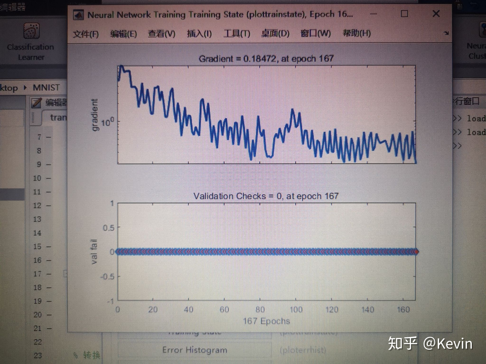
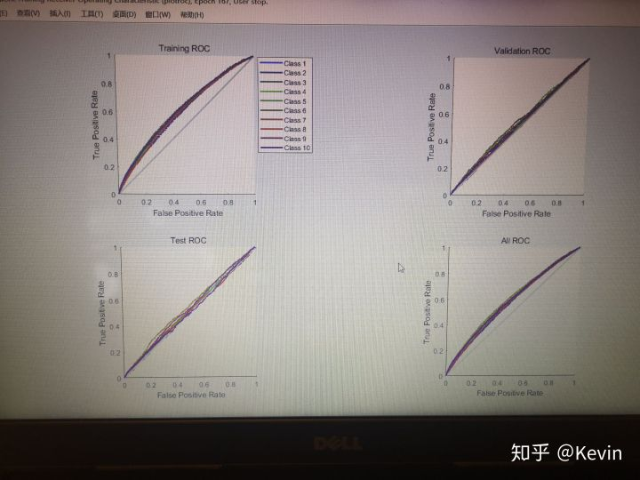

今天是为matlab心碎的一天，两个小时的BP神经网络没有保存
说说我干了些啥叭。
1.学了BP
三层的BP(Back Propagation) ，反向传播神经网络，输入层，隐藏层，输出层。每层之间，左右全连接，上下不连接。样本提供给输入层之后，由输入层向量计算出激活值，作为隐藏层的输入，同理由隐藏层作为输入，计算输出层的激活值，最后得到实际输出。由网络实际输出与真实值产生校正误差，反向进入网络(输出变为输入) ，反向传播过程调整各层权重和阈值。以上是输入模式顺传播和输出误差的逆传播过程。训练神经网络只要循环上述过程，学习结果满足可接受误差即训练完成。
训练BP的体会：神经网络模拟的是人类学习过程，激活函数选择sigmoid，此函数更贴近神经细胞的化学激活过程；神经网络是非线性系统，一个神经元可以理解为一个logistic分类器，权重描述的是突触连接神经细胞紧密程度，输出描述的是轴突上的电信号传播，激活描述的是化学能达到阈值产生的神经元兴奋，反之是抑制；神经网络的处理是并行的，计算机上微观串行；知识在神经网络上分布存储，相当与权重和阈值；人工神经网络有很好的容错性，预定比例的节点不参与运算对整个系统性能影响不大，因此对于数据缺失，数据噪声，有良好的容错和泛化能力；数据分布没有要求，广泛应用于非正态分布，非线性的问题；隐藏层神经元数量一般为输入层两倍再加一点余量(kevin一会儿有话说，这里坑死人)。
2. 训练了BP
MNIST训练集，60000条，28*28的784维数据，那么隐藏层神经元数量大约是1. 6k。嗯，我就这么干了，我过于相信现代单核计算机的计算能力，两个小时不收敛。。。

康康这梯度，过山车一样，不知道是不是我的训练时间太短(我也不知道2个小时算长算短) ，反正这个梯度值就一直0. 1震荡，167次迭代，一次validation都没有。

再来康康ROC受试者特征曲线，就跟我以前做的菜鸡模型没差，我好像就没做过漂亮的ROC，我甚至有点怀疑这个ROC是错的，(这个图意思大概就是用模型比不用模型要好一点点，跟抛硬币差不多 )
所以！为什么呢？因为有人忘记做特征降维了，嗯，784都能忘，20多的都记得做PCA 。
上下求索，matlab里面没有PCA的APP，大年初一可能要手写PCA，虽然有现成的库，matlab的库确实不友好，没一次体验良好的。(别问为什么不用SPSS，那么大个矩阵copy不出来
新年快乐，身体健康。
van安(´-ω-`)
————————————————————————